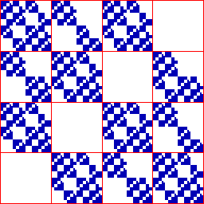
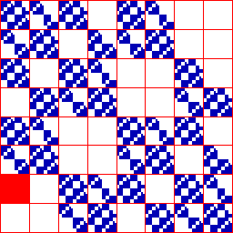

|  |  |
| Click each address | to see it highlighted. |
| The empty length 2 addresses are | The empty length 3 addresses are |
| 11 | 111, 112, 113, 114 (contained in 11) |
| 14 | 141, 142, 143, 144 (contained in 14) |
| 41 | 411, 412, 413, 414 (contained in 41) |
| 44 | 441, 442, 443, 444 (contained in 44) |
| 211, 214, 241, 244 | |
| 311, 314, 341, 344 | |
| 424 |
| Note the pairs 42 and 24 are not forbidden, so the empty length 3 address 424 does not contain a forbidden pair. |
| We see the exclusions of this driven IFS are not consequences of the forbidden pairs. More than the immediate past determines the future in this example. |
Return to Combinatorial example.